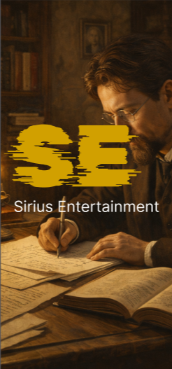
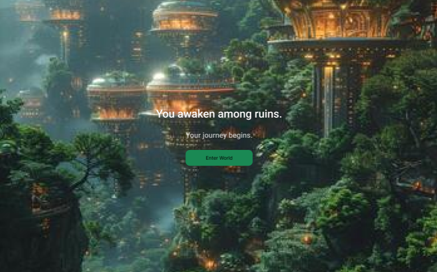
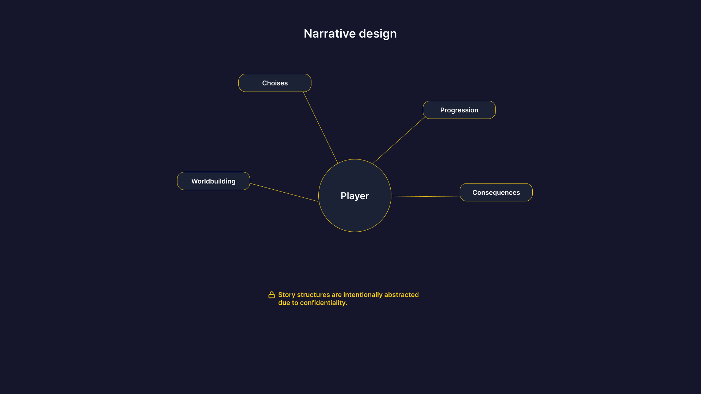
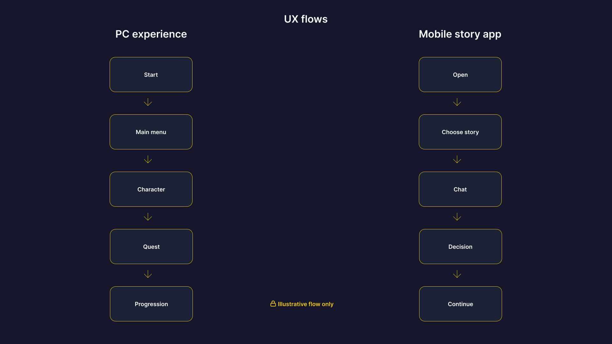

ONE STUDIO MANY WORLDS
Sirius Entertainment
An independent creative studio my sister and I are building together, combining browser games, interactive stories and longer-term game projects.
Co-founder
Designer
Programmer
Sirius Entertainment
Ongoing development
Browser Game
PC Game
Mobile App
Figma
Milanote
Visual Studio

A studio built around ideas we share
My sister and I started Sirius Entertainment so we could build our ideas together. One part of that work is The Tiny Heist Crew, a browser game we have developed, tested and continued to refine. Other projects are at earlier stages.

Connecting the story to what players do
My work covers player flows, interfaces, gameplay structure, narrative planning and prototypes. I think about what players need to understand in a moment and how the game can communicate it without interrupting play.

Different products, different stages
Alongside our browser game, we are developing ideas for a PC game and a separate mobile storytelling app. Neither is presented here as a finished release; both have their own design and development challenges.

Sharing the work without sharing everything
The studio is still growing, and our projects are not all at the same stage. This case study shares my role and design process while keeping unreleased story and game details private.
Behind the Design
From ideas to playable experiences
Planning documents, flow diagrams and prototypes help me work out how the story, interface and gameplay fit together.
Studio Vision

Working with my sister to shape the studio’s direction and plan what to build next.
Narrative Structure

Planning story structures, progression and worldbuilding without revealing unreleased material.
UX & Interaction Flows

Mapping how players move through menus, choices and interactions across different projects.
Prototype Direction
Using prototypes to explore whether an idea works in practice, not just on paper.
Key Learnings
Product vision
Building several projects at once has taught me to give each one a clear purpose rather than forcing them into the same mould.
Game UX
A game needs to communicate through the experience itself. Timing, feedback and readable choices matter as much as the interface.
Protecting ideas
I can show my process and decisions without revealing stories and concepts that are still being developed.
Reflection
What building a studio has taught me
Building our own projects means thinking beyond the next screen. The world, the mechanics and the user experience have to make sense together.
It also means making real choices about scope: what we can build now, what we need to test and what can wait.